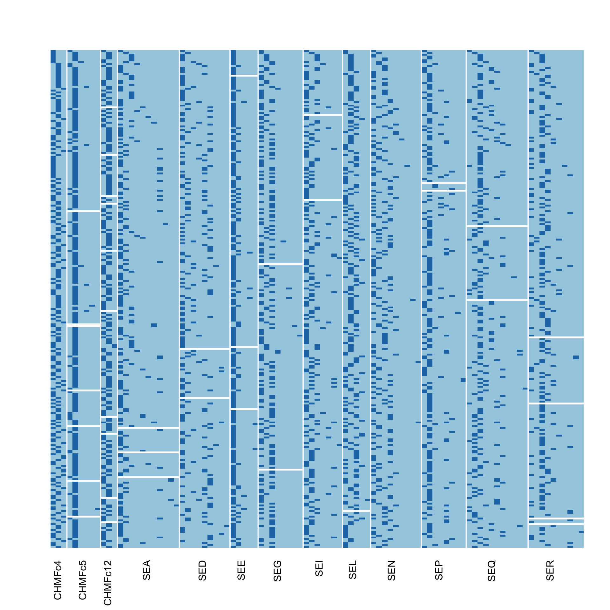
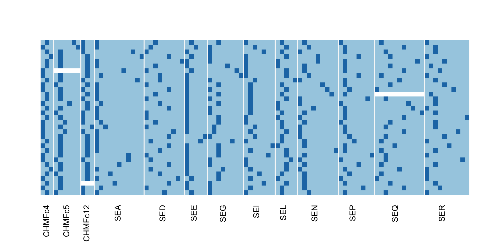
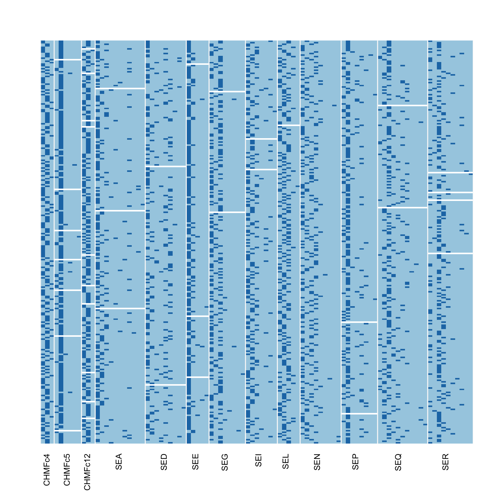

Getting Started
Zhian N. Kamvar and Sydney E. Everhart
2018-04-05
getting-started.Rmd
What the repvar package does
The repvar package is designed to provide a simple way of finding the minimum number of samples needed to represent all variables in a given sparse binary matrix. The impetus for this was driven by a need to resequence a small set of samples from a population genetic study to serve as positive controls for allele calls.
How it works
The main algorithm is in the function rpv_indices(). In it’s simplest form, the algorithm works like so:
- count the number of observations in each column and sort them
- set a counter to count the number of columns that haven’t been accounted for
- create a vector to store the sample names
- while the counter is greater than zero
- record the first sample from each of the columns with the smallest number of observations
- take the union of those sample names and any other sample names that have been collected
- remove the columns these samples represent from the original column list
- set the counter to the number of columns left in the original column list
- verify that all the columns have been accounted for by the sample names
- return the vector of sample names
Functions in this package
There are four functions in this package:
-
rpv_indices()searches a matrix with the above algorithm and returns a vector of rownames for that matrix. -
rpv_find()randomizes the rows of the matrix and performsrpv_indices()on the randomizations to return a list of candidates to be the minimum set. -
rpv_stats()computes diversity indices for a matrix. -
rpv_image()allows you to visualize your matrix as an image.
Quickstart
Because there are several possibilities for minimum number of samples, the data should be randomized and iterated over several times. This can be done with rpv_find():
library("repvar")
data("monilinia")
# First, view our data
loci <- sapply(strsplit(colnames(monilinia), "[.]"), "[", 1)
rpv_image(monilinia, f = loci)
# Now randomly sample 200 times to get a set of vectors
set.seed(2018)
id_list <- rpv_find(monilinia, n = 200, cut = TRUE, progress = FALSE)
id_list
#> [[1]]
#> [1] "A233" "A610" "A154" "A603" "A666" "A163" "A293" "A339" "A590" "A071"
#> [11] "A085" "A218" "A269" "A074" "A182" "A417" "A681" "A176" "A366" "A489"
#> [21] "A216" "A172" "A488" "A406" "A390" "A039" "A010" "A016" "A692" "A129"
#>
#> [[2]]
#> [1] "A233" "A610" "A154" "A603" "A666" "A163" "A293" "A339" "A590" "A071"
#> [11] "A085" "A218" "A269" "A074" "A182" "A417" "A681" "A176" "A367" "A489"
#> [21] "A191" "A172" "A488" "A408" "A390" "A404" "A387" "A016" "A692" "A571"
#>
#> [[3]]
#> [1] "A233" "A610" "A154" "A603" "A666" "A163" "A293" "A339" "A590" "A071"
#> [11] "A085" "A218" "A269" "A074" "A182" "A417" "A681" "A176" "A367" "A522"
#> [21] "A191" "A172" "A488" "A408" "A390" "A547" "A385" "A480" "A692" "A088"
lengths(id_list)
#> [1] 30 30 30We can see here that we have 3 possible sets of samples that have 30 samples each. We can compare them using rpv_stats(), which calculate entropy statistics:
do.call("rbind", lapply(id_list, function(i) rpv_stats(monilinia[i, ])))
#> eH G E5 lambda missing
#> 1 55.22702 39.72137 0.7140605 0.9773436 0.005964912
#> 2 55.31349 39.77928 0.7139899 0.9773868 0.007719298
#> 3 54.74656 39.05319 0.7080117 0.9769182 0.007719298From this, we can see that they are all relatively equivalent, but the first set has the least missing data and the greatest evenness (E5).
Let’s see what samples this represents:
rpv_image(monilinia, f = loci, highlight = id_list[[1]])rpv_image(monilinia[id_list[[1]], ], f = loci)Detailed Example: Monilinia fructicola
To demonstrate why we need to shuffle the data, we will be using a data set representing 264 samples of Monilinia fructicola collected from peach orchards in Georgia genotyped at 13 microsatellite loci representing 95 alleles. The data are stored in a 264x95 matrix where each row represents a sample and each column represents an allele. Black cells indicate the presence of an allele, blue cells indicate an absence and white cells indicate missing data.
library("repvar")
data("monilinia")
loci <- sapply(strsplit(colnames(monilinia), "[.]"), "[", 1)
rpv_image(monilinia, f = loci)
Immediately you should be able to see that some loci—like CHMFc4—have few alleles that are fairly well-represented while other loci—like SEA—have several alleles with the majority of them represented by a handful of samples.
If we run rpv_indices() on our data, we get a vector of samples that represent all of the alleles:
print(ids <- rpv_indices(monilinia))
#> [1] "A233" "A610" "A154" "A603" "A666" "A163" "A293" "A339" "A590" "A071"
#> [11] "A085" "A218" "A269" "A074" "A182" "A417" "A681" "A008" "A366" "A176"
#> [21] "A489" "A191" "A172" "A394" "A406" "A390" "A039" "A010" "A016" "A398"
#> [31] "A034" "A088" "A012"
length(ids)
#> [1] 33
colSums(monilinia[ids, ]) # all of the variables are represented
#> CHMFc4.224 CHMFc4.231 CHMFc4.238 CHMFc5.85 CHMFc5.97 CHMFc5.111
#> 16 15 2 NA NA NA
#> CHMFc5.105 CHMFc5.107 CHMFc5.113 CHMFc12.163 CHMFc12.159 CHMFc12.169
#> NA NA NA NA NA NA
#> SEA.132 SEA.156 SEA.160 SEA.128 SEA.136 SEA.152
#> 19 4 1 1 1 1
#> SEA.144 SEA.140 SEA.164 SEA.176 SEA.148 SED.133
#> 1 2 1 1 1 9
#> SED.129 SED.145 SED.109 SED.137 SED.141 SED.149
#> 4 4 5 1 7 1
#> SED.125 SED.187 SEE.156 SEE.148 SEE.160 SEE.152
#> 1 1 25 5 1 1
#> SEE.164 SEG.144 SEG.126 SEG.138 SEG.120 SEG.154
#> 1 15 2 11 1 1
#> SEG.149 SEG.132 SEG.159 SEI.116 SEI.113 SEI.119
#> 1 1 1 12 12 4
#> SEI.122 SEI.110 SEI.103 SEI.100 SEL.143 SEL.147
#> 1 2 1 1 7 12
#> SEL.139 SEL.151 SEL.135 SEN.227 SEN.231 SEN.235
#> 12 1 1 10 13 3
#> SEN.223 SEN.219 SEN.273 SEN.256 SEN.215 SEN.248
#> 1 2 1 1 1 1
#> SEP.257 SEP.261 SEP.273 SEP.237 SEP.265 SEP.247
#> 5 18 3 1 3 1
#> SEP.245 SEP.254 SEQ.142 SEQ.136 SEQ.134 SEQ.138
#> 1 1 NA NA NA NA
#> SEQ.152 SEQ.140 SEQ.132 SEQ.154 SEQ.146 SEQ.144
#> NA NA NA NA NA NA
#> SEQ.130 SER.145 SER.153 SER.149 SER.141 SER.137
#> NA 10 2 11 2 3
#> SER.157 SER.165 SER.133 SER.182 SER.147
#> 1 1 1 1 1Let’s highlight where these sampels came from:
rpv_image(monilinia, f = loci, highlight = ids)
If we visualize just these samples, we can see that each locus is accounted for at least once:
rpv_image(monilinia[ids, ], f = loci)
However, if we shuffle the data set:
set.seed(2018)
monilinia_shuffled <- monilinia[sample(nrow(monilinia)), ]
rpv_image(monilinia_shuffled, f = loci) # shuffled data
We get a different answer:
print(new_ids <- rpv_indices(monilinia_shuffled))
#> [1] "A233" "A610" "A154" "A603" "A666" "A163" "A293" "A339" "A590" "A071"
#> [11] "A085" "A218" "A269" "A074" "A182" "A417" "A681" "A176" "A366" "A513"
#> [21] "A522" "A216" "A488" "A406" "A390" "A547" "A387" "A016" "A692" "A162"
#> [31] "A500" "A007"
par(mfrow = c(1, 2))
rpv_image(monilinia, f = loci, highlight = new_ids,
newplot = FALSE, # avoid creating a new plot
col = c("grey95", "grey10"), # color background grey
idcol = c("#B15928", "#FFFF99") # reverse foreground colors
)
rpv_image(monilinia, f = loci, highlight = ids,
newplot = FALSE, # avoid creating a new plot
col = c("grey95", "grey10"), # color background grey
idcol = c("#B15928", "#FFFF99") # reverse foreground colors
)par(mfrow = c(1, 1))